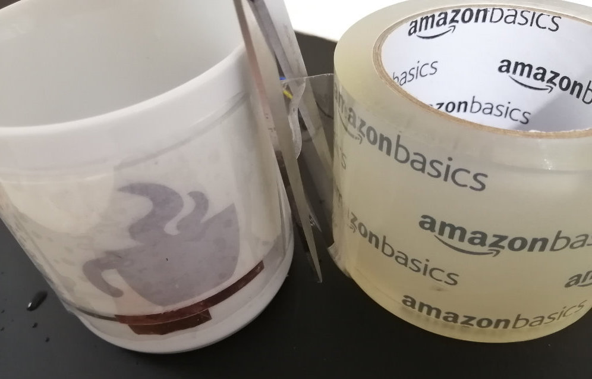

6.810 Engineering Interactive Technologies (fall 2021)
Lab 8: Mug Assembly & Display Control Using Temperature
In this lab, we will first assemble the mug, i.e. solder on jumper wires to connect the mug to a breadboard and attach your inkjet printed circuit to it. We will then build the temperature sensing circuit and write code to determine temperature based on the measured voltage. Finally, we will add our display circuit and extend the temperature sensing code to blink the display when the temperature of the liquid in the mug is too hot so the user does not get burned.

Steps:
- Attach Sprayed EL Display to the Circuit
- Attach Circuit to the Mug
- Solder on Jumper Wires for Breadboarding
- Cover Circuit with Tape to Protect from Moisture & Touch
- Build Temperature Sensing Circuit
- Write Code to Determine Resistance of Temperature Sensor
- Correlate Resistance with Temperature Change
- Add EL Display Control Circuit to Mug
- Blink Display When High Temperature is Measured
Deliverables
At the end of the lab, upload to your student google drive:- 2-3 photos (.jpg or .png) from different angles of your assembled mug
- the Arduino code (.ino) for reading the temperature and controlling your display
- a short video (.mov or .mp4, max. 1 minute) showing how your display turned off at room temperature and starts blinking after pouring in boiling hot water in it.
Help us Improve Class Materials for Lab8:
Please let us know if you had any trouble with the assembly, circuit, or code or if anything was confusing in the write up.
You can add your comments here.
Please let us know if you had any trouble with the assembly, circuit, or code or if anything was confusing in the write up.
You can add your comments here.
(1) Solder Jumper Wires to Mug Sensor
Let's get started withsoldering jumper wires onto the connector pads, which we can then use to connect to a breadboard and our microcontroller. Solder Jumper Wire onto Copper Tape Strips: Take a soldering iron and
apply a drop of solder on one of the copper strips. Next, take a short jumper wire, hold it over the solder drop, and press it down with the solder iron to melt it into the solder until it is well connected (see images below). Repeat this for all 4 jumper wires.(2) Attach Circuit to the Mug
Attach Double Sided Tape to Mug: We will usedouble sided tape to attach the entire circuit to the mug. Cut off a tape strip the length of your circuit design (17cm) and attach it across the surface of the mug. Next, remove the protective foil from the tape to expose the outside facing adhesive side.
Attach Circuit onto Double Sided Tape: Next, take your
printed circuit and attach it onto the tape on the mug.
(3) Cover Circuit with Tape to Protect from Moisture & Touch
This is not needed anymore right?The last step you need to do is to protect the mug from moisture and touch. This is especially important since we want to fill hot and cold water into it and some water may spill over (try to avoid it). Also, we want to protect the circuit from constant touching, which may happen with a mug. To protect the circuit, we will use clear tape to cover all the electronics.
Apply Transparent Tape Over Circuit: Cut off a 19cm long stripe of our extra wide 3inch transparent tape. Carefully apply the tape onto the entire circuit. If you make a mistake here, do not pull back the tape, it will destroy the silver circuit. You need to just continue rolling the tape over the circuit even if it will not be perfect. Therefore, be extra careful.
it would be really good to have better images here

(5) Build Temperature Sensing Circuit
Tomeasure the temperature of the liquid in the mug, we need to measure the resistance of the silver traces (horse shoe pattern of our temperature sensor) as explained in the last lab. So how can we measure resistance on the microcontroller?Measuring Resistance with a Voltage Divider Circuit: Unfortunately, we cannot directly measure resistance with the microcontroller. The microcontroller can only measure
voltage but not resistance. However, there is a way to use changes in voltage to determine resistance. A circuit that allows us to do this is called a voltage divider. You had already learned about this in 6.08, but we will provide you with a refresher below.Voltage Divider Circuit: The schematic of a voltage divider is shown below. It consists of one
known resistor (R1) and one unknown resistor (R2) that we want to measure. In our case, the unknown resistor R2 is our temperature sensor. For the known resistor R1, we can simply pick one but it's a good idea to pick something that matches roughly the other resistor R2 and how do you know what R2 is roughly? just a guess?, i.e. we will use for the known R1 resistor 1kOhm. Vin is the 3.3V supply voltage from the ESP32. Vout is a voltage that will change when the resistance of our temperature sensor (R2) changes.Build the Voltage Divider Circuit:
Build the voltage divider on a breadboard and connect your temperature sensor to this circuit as R2.(6) Write Code to Determine Resistance of Temperature Sensor
Now that we have the voltage divider circuit wired up, the question remains how does measuring the voltageVout help us determine the resistance of the temperature sensor?Computing R2 (Resistance of Temperature Sensor): In a voltage divider circuit, we can compute R2, i.e. the resistance of our temperature sensor, using the following formula:
Vout = (R2*Vin)/(R1+R2)We know
Vin since you connected the 3.3V pin of your microntroller. We also know Vout since this is the voltage measurement from our microcontroller. We also know R1, which is our chosen resistor of 1kOhm. Thus, we have everything to solve the equation for R2 to determine the current resistance of the temperature sensor.Adjust Formula to Solve for R2: Take a moment to
change the formula so that it solves for R2 and not Vout. You may want to use a piece of paper to do the math.Read Voltage Vout from Voltage Divider Circuit: Create a new Arduino program and use
analogRead() to read the voltage value Vout from the voltage divider. analogRead() returns the voltage value between 0V and 3.3V and maps it to an output range of 0 - 4095. What this means is that if you read a value of 2047 (4095/2), your voltage is around 1.65V (3.3V/2). Write the incoming values to the Serial plotter. Remember that you have to add a newline after each value in order to plot it (i.e. use Serial.println()).Below, you see typical voltage readings for a temperature sensor. Note that the values of these readings depend on your individual temperature sensor and might be higher or lower on average.
Write Code to Determine Resistance R2 of our Temperature Sensor: Now, it's time to use the
voltage divider formula adjusted to solve for R2 from above. Use it to compute the resistance R2 of your temperature sensor and plot the R2 values on the Serial Plotter. Smoothing the Signal with a Box Filter: You'll notice that the resistance values are
fluctuating a lot. For instance, in the image above the values of our temperature sensor fluctuate between 2350 - 2680 although they should be steady since the temperature is not changing. This is due to the limited measurement precision of the microcontroller and environmental electric noise that slightly changes the read in voltage values. To smooth out such noise, you can use a filter. For this lab, we will use a box filter. In the next section, we will tell you how to implement the box filter.Write Code for the Box Filter: A
box filter works by saving an array of sensor values (the box) of a specific box size (e.g., 300 values) and then computing the mean of this box is this the same as the running average?. As new sensing values get read in through analogRead(), the box moves forward by one value, i.e. the oldest element in the array gets replaced by the new value and you need to recompute the mean. Implement a box filter with 300 values that smoothens out the values from analogRead(). Once you have completed the filter, your results should look like the image below. You see that the filter first collects 300 values and the mean is increasing with every new value. When the box is full, there is a stable resistance value.
The resistance in the figure below stabilizes at around 940Ohm. Your sensor might have a different resistance and will stabilize at a different value. The main point is, that is stabilizes.
(7) Correlate Resistance with Temperature Change
Now we can determine the resistance of our temperature sensor. Buthow much does the resistance increase with changes in temperature? For this, you will run an experiment.Determine Resistance at Room Temperature: First, note down the
mean resistance at room temperature.Determine Resistance at around 80℃: Next, use a water kettle and
boil water to 100C. Pour it into the mug while you continue to plot the resistance values with the Serial Plotter. You should notice that the values start increasing while the mug is heating up. Once you reached a stable value, write it down. The increase in resistance over room temperature should be around 4%. so below it says 80C, that means the water in the mug is 80C after you poured it right?alpha is the linear gradient. for continuous temperature sensing.
Determine Temperature Threshold for Hot Liquids: The goal of this lab is to let your
display blink when the mug gets very hot. Thus, the first step is to determine a resistance threshold that will be hit when you pour in hot water. Select a value that is a bit lower than the maximum resistance value that you measured in the previous step. This is necessary because there is still some noise and we want to make sure that the threshold will be hit every time.Write Code that Determines Hot/Not Hot: Based on your selected threshold value,
write code that sends a Serial message (e.g., "HOT") when the threshold is hit. Pour in some water into your mug and test if the threshold gets reached. If your temperature sensor can detect the hot water, you can continue with the next step.
(8) Add EL Display Control Circuit to Mug
Next, we want toconnect our temperature readings to the display so that we can blink it when the hot water is in the mug. Let's first connect the display circuit to the mug.Connect Display Circuit to Mug: You already have the
display circuit from the previous lab.
All that's left to do is to connect the display circuit to the corresponding wires on the mug that lead to the display. Test the display once again to make sure that everything is still working fine by letting it blink with the same code that you used in the previous lab.(9) Blink Display When High Temperature is Measured
In this final step, you will use yourtemperature readings to trigger the display. The display should start blinking at temperatures above >70C to help users avoid getting burned and otherwise should be turned off.Integrate Display Code with Temperature Sensing Code: You already wrote code for turning the display on/off (with integrated fading) in one of the last labs.
Integrate the display code with your temperature sensing code. Now do a final test by pouring in hot water into your mug and see if the display starts blinking.Your final design should look like this:
Deliverables
At the end of the lab, upload to your student google drive:- 2-3 photos (.jpg or .png) from different angles of your assembled mug
- the Arduino code (.ino) for reading the temperature and controlling your display
- a short video (.mov or .mp4, max. 1 minute) showing how your display turned off at room temperature and starts blinking after pouring in boiling hot water in it.